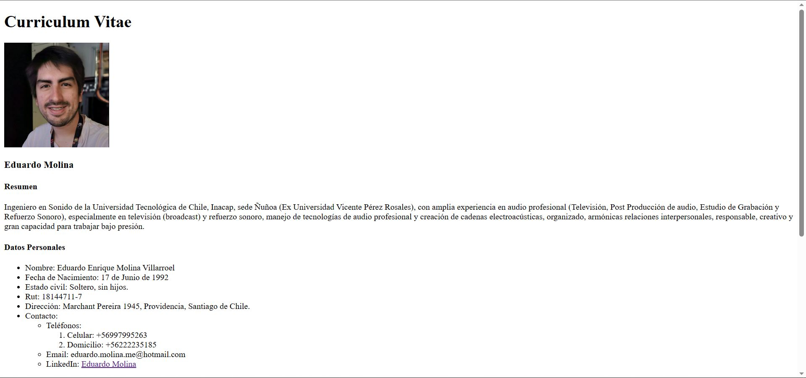
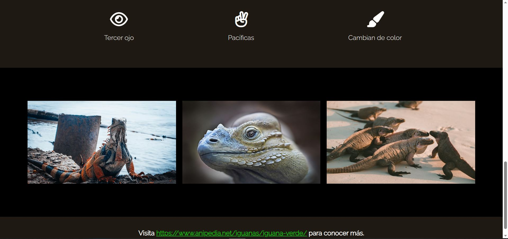
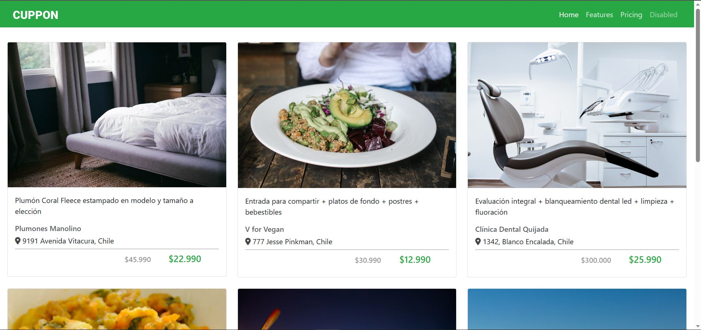
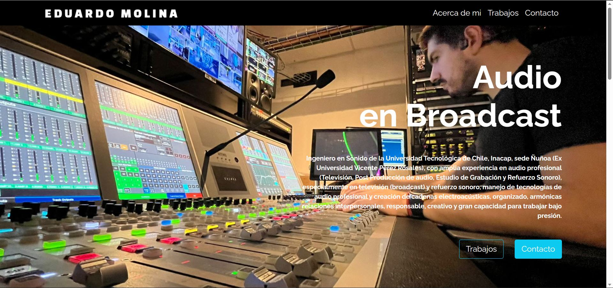
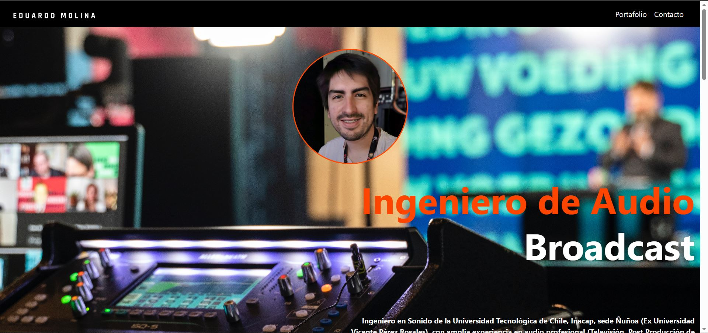

Portafolio Desafío Latam

Desafío 1 - Mi Curriculum Vitae en HTML
Html.

Desafío 2 - Landing Page
CSS.

Desafío 3 - Iguana Page
Flex.

Desafío 4 - Cuppon
Bootstrap.

Desafío 5 - GitHub
Terminal, Git y GitHub.

Desafío 6- Prueba - Desarrollo de Portafolio
Prueba colaborativa.